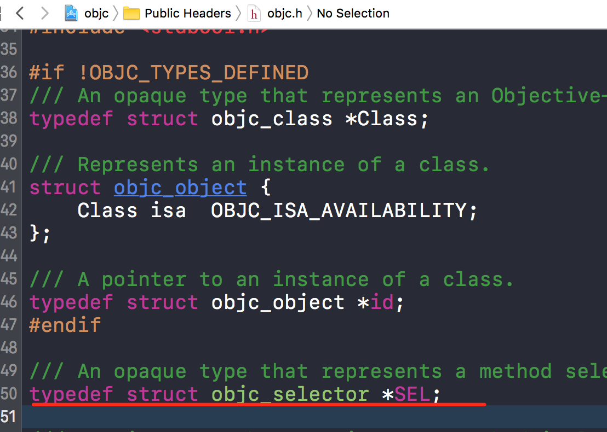
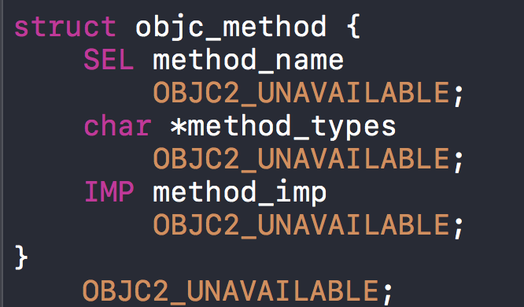
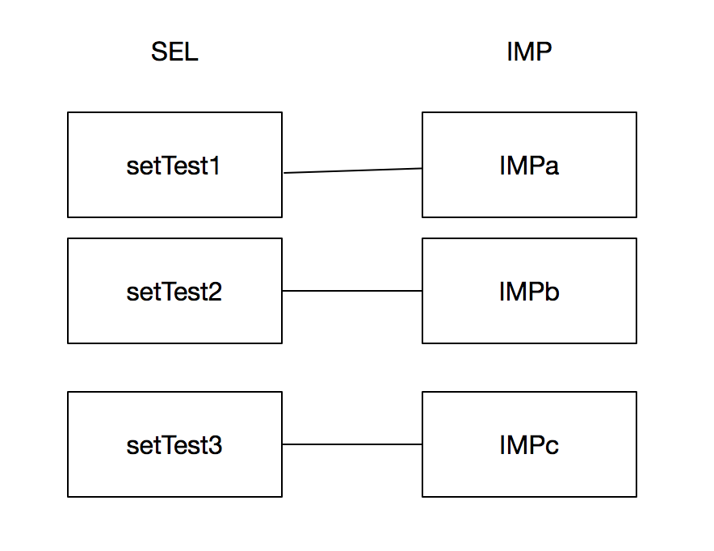
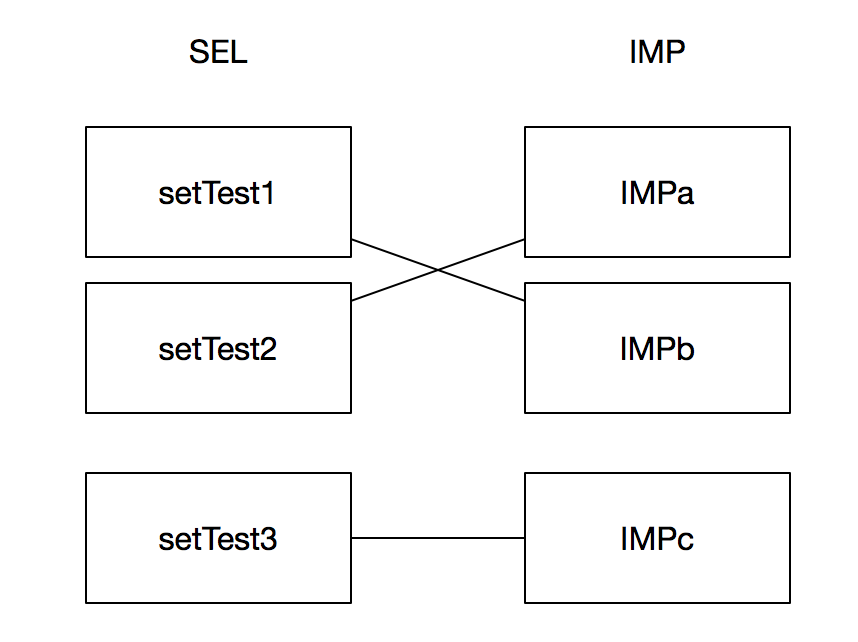

runtime探秘-Method Swizzling的实现
runtime探秘-Method Swizzling的实现
写这篇文章原因是起源是一个问题，一日做移动安全的朋友问的hook这个黑魔法在iOS的实现原理，在解答问题的过程中发现，其中涉及多个知识点。为防止日后忘记，特撰写此文。
SEL
做过iOS开发的对此可能都不陌生

在objc/runtime.h中我们一睹它的真面目（如上图），是个指针。
说到这我们就不得不说一下OC里的关键字@selector，苹果官方是这样描述它的
- A selector is the name used to select a method to execute for an object, or the unique identifier that replaces the name when the source code is compiled. A selector by itself doesn’t do anything. It simply identifies a method. The only thing that makes the selector method name different from a plain string is that the compiler makes sure that selectors are unique. What makes a selector useful is that (in conjunction with the runtime) it acts like a dynamic function pointer that, for a given name, automatically points to the implementation of a method appropriate for whichever class it’s used with. Suppose you had a selector for the method run, and classes Dog, Athlete, and ComputerSimulation (each of which implemented a method run). The selector could be used with an instance of each of the classes to invoke its run method—even though the implementation might be different for each.
原文·链接
简而言之就是每个类都维护着一个方法表，通过@selector得到表里储存的方法指针（SEL）这样的设计是源于OC的语言性质
Objective-C在编译时，会依据每一个方法的名字、参数序列，生成一个唯一的整型标识(Int类型的地址)，这个标识就是SEL。
这里要补充一句从C／C++转过来（比如我）可能会范一个错误，
这样是不可以的，虽然在C++ 和C# 可以，但是在这里会报错，同类方法表内Selector无法重复。
method
这块要补充一个容易混淆的知识点
###Selector
Selector（typedef struct objc_selector *SEL）:
- 在运行时 Selectors 用来代表一个方法的名字。Selector 是一个在运行时被注册（或映射）的C类型字符串。Selector由编译器产生并且在当类被加载进内存时由运行时自动进行名字和实现的映射。
###method
Method（typedef struct objc_method *Method）:

- 方法是一个不透明的用来代表一个方法的定义的类型。
###implementation
Implementation（typedef id (*IMP)(id, SEL,…)）:
- 这个数据类型指向一个方法的实现的最开始的地方。该方法为当前CPU架构使用标准的C方法调用来实现。该方法的第一个参数指向调用方法的自身（即内存中类的实例对象，若是调用类方法，该指针则是指向元类对象metaclass）。第二个参数是这个方法的名字selector，该方法的真正参数紧随其后。
理解 selector, method, implementation 这三个概念之间关系的最好方式是：在运行时，类（Class）维护了一个消息分发列表来解决消息的正确发送。每一个消息列表的入口是一个方法（Method），这个方法映射了一对键值对，其中键值是这个方法的名字 selector（SEL），值是指向这个方法实现的函数指针 implementation（IMP）。
好的补充的知识点讲完了，下面进入正题
Method Swizzling使用
书归正传咱们来看看黑魔法的核心实现
|
|
我们可以看非空判断后进入了lookUpImpOrNil
|
|
在这我们看到灵魂人物lookUpImpOrForward,Objc_msgSend的实现基石
|
|
我们把线程锁之类的抛开，来看看重点项目
|
|
当cache是YES时（为传入），就优先调用cache_getImp在缓存中搜索显然我们这里是NO，这个开关是为Objc_msgsend做的优化，以后写消息转发的时候再说。（_cache_getImp是用汇编写的，这理解不深入了，主要没看懂）
|
|
找到了具体IMP剩下的就是交换了


|
|
后记
深入runtime实现，让我受益匪浅，以前想当然的问题发现并非如此，写出来需要的知识储备，果然要比说出来多得多。过程中查了一些资料，才发现对于底层的认知还有许多不做，这文章可以说是站在大神的肩膀上完成的。文中runtime代码为（objc4-706）.
谢谢
参考：
Method Swizzling